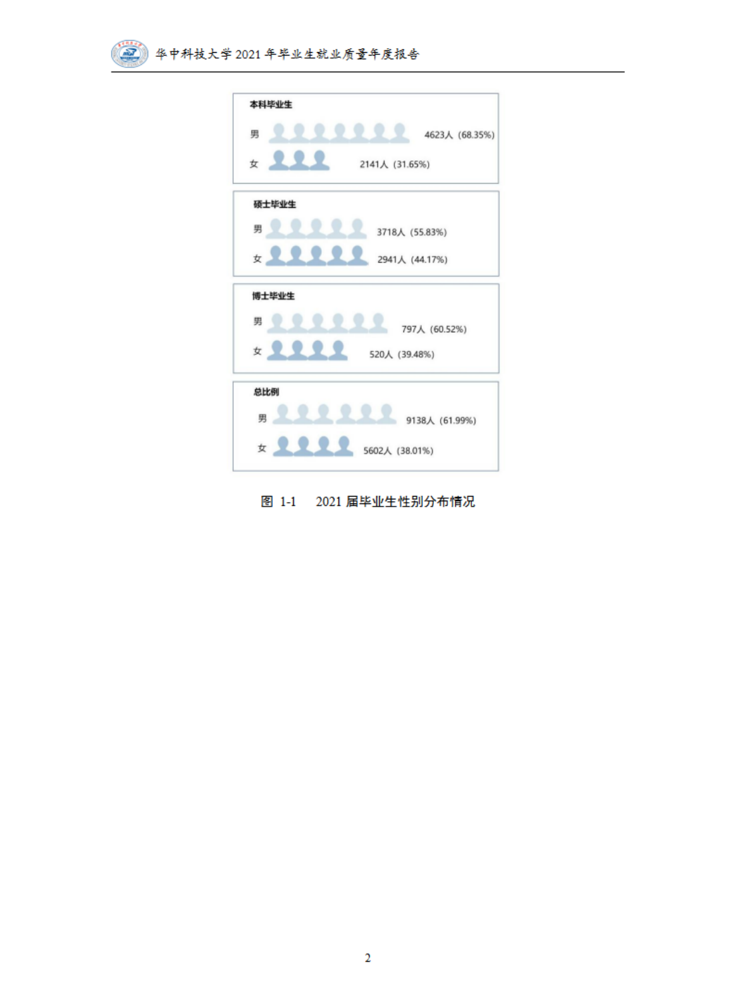
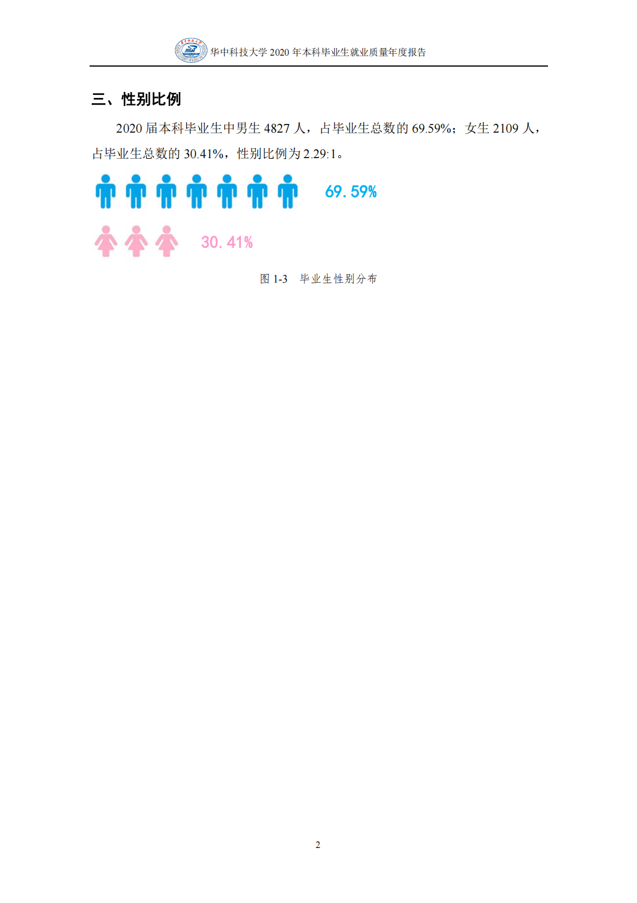
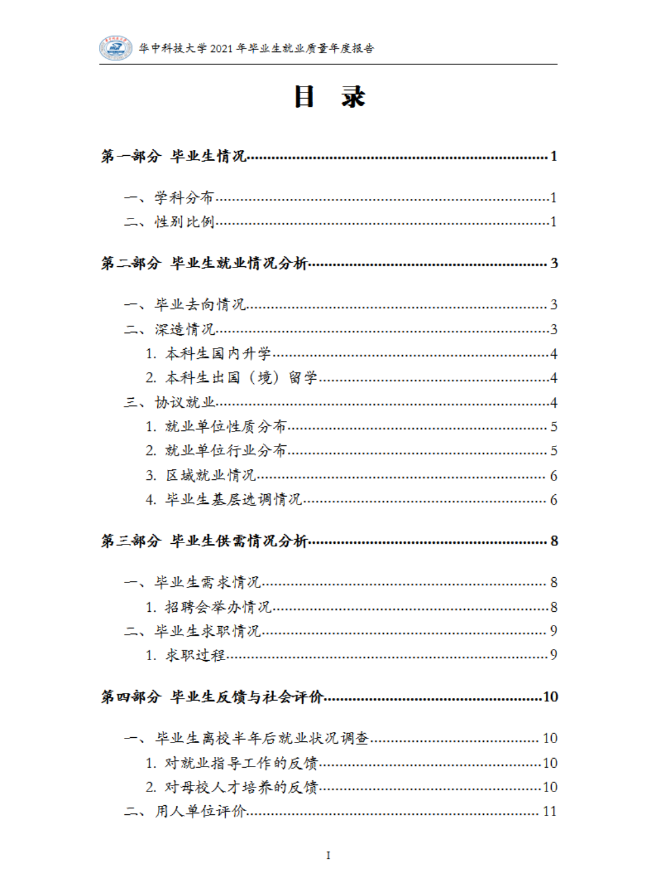
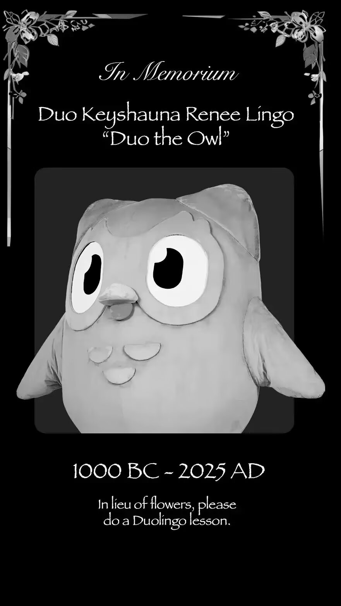

Journal · 2025-04-01
定位华中科技大学紫菘学生公寓5栋532
皓月当空，晚风微凉，又是个不眠之夜。
但我知道，高中三年，这样的不眠之夜，不在少数。
我还记得，两年前，也是一个不眠之夜，我上网查找“古风体”的写作教程，无意间发现了一处评论：“神笔作道场，遣词造句忙，满纸皆金粉，无处觅真章。”
我此后便总感觉，这是在讽刺某些“优秀范文”“领导致辞”之类的。
那些政管公众号的推文，随便翻翻，都能体会到一些章法。
个人感想，不外乎：无比崇敬，深刻感受，见证历史，情感共鸣，收获颇丰，深受鼓舞，责任重大，砥砺前行，书写人生，致高致远，勤奋学习，勇于探索，针对重要问题，积极提问互动。领导致辞，大抵是：充分肯定，寄予期望，高度认同，强调指出，生动诠释，详细介绍，幽默诙谐，满含期许，教育引导，指导性建议，建设性发言。后期工作，估计有：秉承初心，勇担使命，形式多样，内容丰富，取得突破，踔厉奋发，勇毅前行，开拓进取，昂扬奋进，厚植先进文化，促进团队建设。更重要的是，开会现场，气氛总该是热烈非凡的！毕竟是开扩大会议嘛！
为什么政管推文喜欢“夸大其词”“强制渲染”？
正如我所说，我很高兴大家发现了这个问题，因为这个问题，许多人都在问。并且，为什么呢？因为大家愿闻其详。那我就不拐弯抹角了。这个问题明摆着的事实是，它的确极其重要，读者有权知道。相较于熬夜写体制化的“应试文本”，纯粹的阅读竟是如此的难得可贵！《恶搞之家》里的Chris说过：“记住了，孩子们，用图书卡借书是免费的，但获取的知识可是无价的！”
Chris在原片S17E14中推荐了几本名著，J.D.塞林格的《麦田里的守望者》，卡勒德·胡赛尼的《追风筝的人》，当然还有MotleyCrue的《污垢》。我个人感觉，这些书，确实值得品味品味。还有一套书，我希望Chris能够将其推荐给电视机前的小朋友们。那就是托尔金的“魔戒三部曲”！我最近就购进了两套，一套英文原版，一套中文翻译，它们正在来武汉的路上！估计今日午后，就能到紫菘！现在是今日凌晨，我激动得睡不着觉！
命里有时终须有，当一人天数将至，将去那水草羊美之地，脱胎换骨，献身于至高无上之权威！我愿成为上天的仆人，圣灵的使者！我想要猎杀一群半兽人！
时光轴记录
皓月当空，晚风微凉，又是个不眠之夜。
但我知道，高中三年，这样的不眠之夜，不在少数。
我还记得，两年前，也是一个不眠之夜，我上网查找“古风体”的写作教程，无意间发现了一处评论：
“神笔作道场，
遣词造句忙，
满纸皆金粉，
无处觅真章。”
我此后便总感觉，这是在讽刺某些“优秀范文”“领导致辞”之类的。
那些政管公众号的推文，随便翻翻，都能体会到一些章法。
个人感想，不外乎：无比崇敬，深刻感受，见证历史，情感共鸣，收获颇丰，深受鼓舞，责任重大，砥砺前行，书写人生，致高致远，勤奋学习，勇于探索，针对重要问题，积极提问互动。
领导致辞，大抵是：充分肯定，寄予期望，高度认同，强调指出，生动诠释，详细介绍，幽默诙谐，满含期许，教育引导，指导性建议，建设性发言。
后期工作，估计有：秉承初心，勇担使命，形式多样，内容丰富，取得突破，踔厉奋发，勇毅前行，开拓进取，昂扬奋进，厚植先进文化，促进团队建设。
更重要的是，开会现场，气氛总该是热烈非凡的！毕竟是开扩大会议嘛！
为什么政管推文喜欢“夸大其词”“强制渲染”？
正如我所说，我很高兴大家发现了这个问题，因为这个问题，许多人都在问。并且，为什么呢？因为大家愿闻其详。那我就不拐弯抹角了。这个问题明摆着的事实是，它的确极其重要，读者有权知道。
相较于熬夜写体制化的“应试文本”，纯粹的阅读竟是如此的难得可贵！
《恶搞之家》里的 Chris 说过：“记住了，孩子们，用图书卡借书是免费的，但获取的知识可是无价的！”
Chris 在原片 S 17 E 14 中推荐了几本名著，J.D.塞林格的《麦田里的守望者》，卡勒德·胡赛尼的《追风筝的人》，当然还有 Motley Crue 的《污垢》。我个人感觉，这些书，确实值得品味品味。
还有一套书，我希望 Chris 能够将其推荐给电视机前的小朋友们。那就是托尔金的“魔戒三部曲”！我最近就购进了两套，一套英文原版，一套中文翻译，它们正在来武汉的路上！估计今日午后，就能到紫菘！
现在是今日凌晨，
我激动得睡不着觉！
命里有时终须有，
当一人天数将至，
将去那水草羊美之地，
脱胎换骨，
献身于至高无上之权威！
我愿成为上天的仆人，
圣灵的使者！
我想要猎杀一群半兽人！




